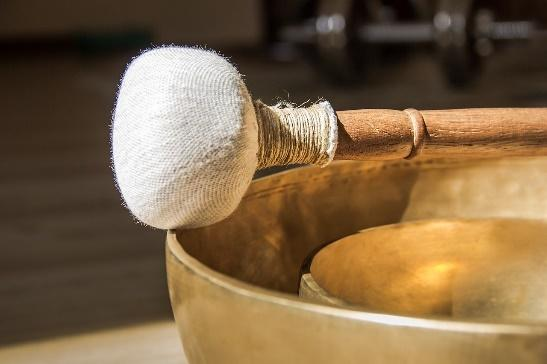
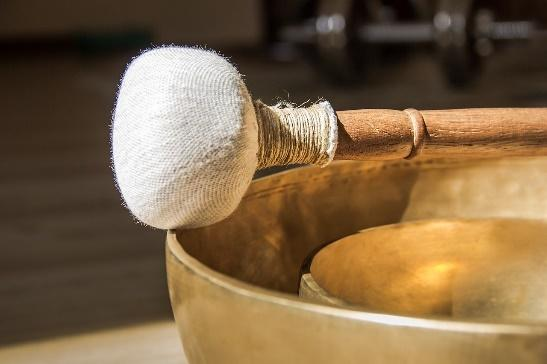

.png) 

Een Klankmassage is ontspanning, bewustwording en genieten van oeroude klanken.
Het lichaam wordt door klankschalen en troms herinnerd aan haar eigen frequentie. Hierdoor ontstaat een zachte massage van klanken en trillingen die het lichaam harmoniseren. Spanningen en blokkades kunnen worden losgelaten. De klankmassage versterkt het zelfgenezend vermogen, de toename van levensvreugde en creativiteit doordat chakra’s worden gebalanceerd. Het heeft een holistische werking op lichaam, geest en ziel.
Je lichaam, jouw 'instrument', wordt door klanken opnieuw gestemd. Je gevoel kan worden aangesproken om weer dichter bij jezelf en je eigen stilte te komen. Klankmassage is daarom in de eerste plaats een verinnerlijkingsproces, een reset, een nieuwe start. Je krijgt nieuwe ruimte en komt meer in balans.
Naarmate je meer kan ontspannen zal je merken dat er een dieper pad ontstaat tot bewustwording. Het kan gebeuren dat er diepe emoties loskomen of blokkades in het lichaam loskomen. Elke klankmassage is een reis op zich, intuïtief afgestemd op je chakra’s met bijpassende klankschalen. Als het nodig aanvoelt, ontvang je tijdens een rustmoment reiki en healing op triggerpoints om je lichaam te helpen herstellen. Een klankmassage kan een goede therapeutische ondersteuning zijn naast alle andere behandelingen.
Tijdens deze individuele behandeling lig je gekleed op je buik op een massagetafel. Als dat niet comfortabel aanvoelt, kan je ook zitten op een stoel. Klanken zinken in langs de rugzijde van je lichaam. Een bad van klanken met klankschalen, schudinstrumenten, handpans, sjamanentrom, bels … wordt intuïtief ontvangen.
Deze klankmassage is ontstaan na de opleiding en vervolgopleiding van Marc Smitt, prof. Percussionist en Klankleraar.
| Tijd | Prijs |
|---|---|
| 80min | 80€ |